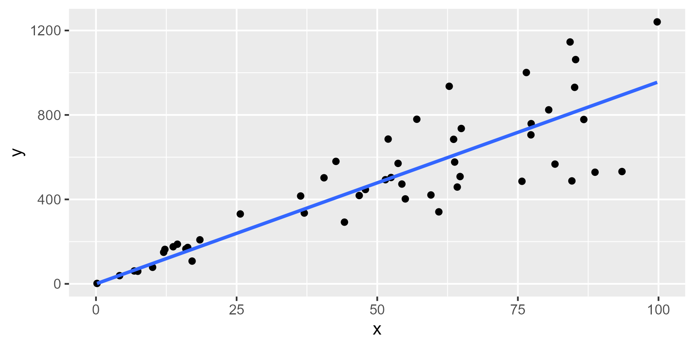
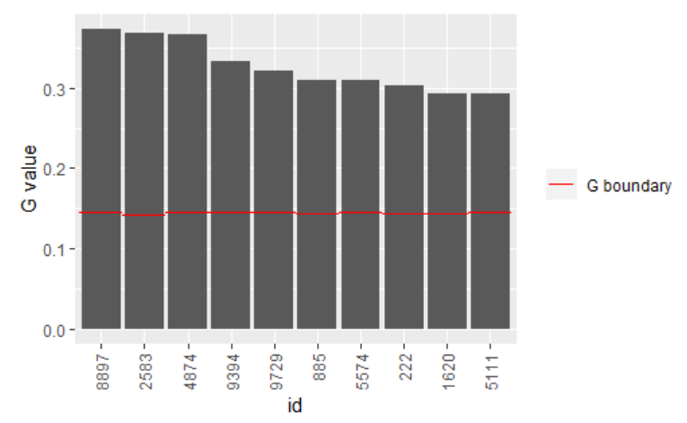
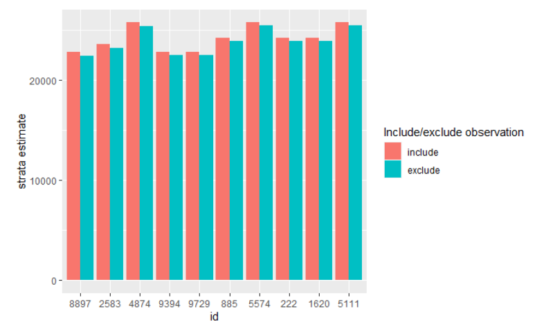

Estimation using struktuR
Susie Jentoft
27.05.2022
struktur-vignette.RmdIntroduction
The struktuR package is used to estimate totals and
their uncertainty from sample survey data, with particular focus on
business surveys. It contains functions which replicates and builds on
the estimation and functionality used in Statistic Norway’s internally
developed SAS-application Struktur (Using
SAS-Struktur, Norsk). Documentation on this earlier application will
be referenced here to aid those wishing to move their statistical
production (or parts of it) to R.
The main purpose of the functions is to:
- Estimate totals for statistic variables for the country and within strata and groups.
- Provide estimations for variance to indicate the quality of the estimated totals.
- Identify outlier/extreme observations that may be having a overly high influence on the statistics.
The estimation method is a model-based estimate using a homogenous, rate or regression model. These are described further in more details later in this document.
Package installation
For internal Statistic Norway users, the package is already installed
on many of the production servers and this step may be skipped. For
other users the package can be installed from github using the
devtools function install_github. This step
only needs to be run one time.
devtools::install_github("statisticsnorway/struktuR")To access and use the functions in the package we need to run
library each time we start a new R session.
library(struktuR)Data requirements
The purpose of the functions used for estimation is to take information from a sample of units (for example a sample of companies) and make inferences on the remaining units in the population to find an estimation for the total. For this we need data on both the sample and population. This can be two separate data sets or one full/population data set with information on the statistics variable for those units in the sample. When there are two data sets, the following variables should be included:
Population data set:
- ID variable which is consistent in both the population and sample
data sets (
id). - An explanatory variable when using regression and rate models
(
x). This is a variable which the statistic variable is correlated with. - A strata variable which divides the population into groups which are similar to each other. This is the smallest grouping variable and which seperate models will be run on.
- Domain variables (or publication groups) for producing statistical totals for. These should be able to be created by joining strata groups together.
Sample data set:
- ID variable (
id) - The explanatory variable when using regression and rate models, but
can be missing (
x) - The statistic variable(s) we are interested in estimating
(
y)
Example data There are two synthetic data sets in
the package for examples: pop_data, sample_data. pop_data
represents a population data set with 10000 rows, each one representing
a company. The variable employees is the number of
employees in the company and provides an explanatory variable used in
many of Statistic Norway’s current estimation models. Variables
emplyees_f and employees_m give the breakdown
for number of male and female employees. Turnover provides
an alternative explanatory variable. Variables size and
industry providing options for stratification.
head(pop_data)| id | employees | employees_f | employees_m | turnover | size | industry |
|---|---|---|---|---|---|---|
| 1 | 0 | 0 | 0 | 15396.54 | small | B |
| 2 | 75 | 15 | 60 | 78814.71 | mid | B |
| 3 | 55 | 42 | 13 | 97128.26 | mid | B |
| 4 | 56 | 32 | 24 | 60414.60 | mid | B |
| 5 | 110 | 13 | 97 | 237306.65 | big | B |
| 6 | 172 | 50 | 122 | 473721.22 | big | B |
The data set sample_data contains 1000 rows representing
a sample of companies. In addition to the variables listed previously it
contains a job_vacancies representing the number of job
positions advertised for the year as an example statistic variable.
Variables sick_days, sick_days_f and
sick_days_m give addition statistic variables for the
number of days lost to sick leave, broken down into male and female.
head(sample_data)| id | employees | employees_f | employees_m | turnover | size | industry | job_vacancies | sick_days | sick_days_f | sick_days_m |
|---|---|---|---|---|---|---|---|---|---|---|
| 5 | 132 | 13 | 97 | 237306.653 | big | B | 1 | 515 | 278 | 237 |
| 9 | 28 | 11 | 10 | 63848.919 | mid | B | 8 | 134 | 127 | 7 |
| 12 | 35 | 6 | 1 | 11462.578 | small | B | 3 | 21 | 17 | 4 |
| 14 | 155 | 1 | 170 | 7934.057 | big | B | 16 | 632 | 540 | 92 |
| 25 | 167 | 81 | 61 | 408964.032 | big | B | 9 | 337 | 200 | 137 |
| 55 | 124 | 31 | 45 | 118718.363 | mid | B | 7 | 525 | 151 | 374 |
Model choice
The main function for estimation in the R package is called
struktur_model and uses the parameter method
to define the model of choice. The default setting is set to run a
rate model but can also be a
homogenous or regression model. This
is similar to the choice given in the SAS-Struktur application

A homogenous model is useful when there are no available additional variables that are correlated with the statistics variable. A rate model is used when there is one variable available for all units in the population which has a good correlation with the statistics variable. A regression model can also be used when there is a variable available in the population but can also be adapted for cases with multiple explanatory variables. It also has an assumption that the residuals in the model are not related to the explanatory variables.
The struktuR package currently only supports the use of
a rate model for estimation. Contact Statistic’s
Norway’s Methods department if you wish to test either of the other
models.
Rate model
A rate model can be described with the general formula: \[ y_{hi} = \beta_{h}x_{hi} + \epsilon_{hi} \] where \(i = 1, 2, ..., N_h\) and is the units in the sample in the stratum, \(h\), \(y\) is the statistics variable available in the sample and \(x\) is the explanatory variable.
For a rate model, the distribution of the error term, or residuals,
is assumed to correlate with the explanatory variable, \(x\). Thereby \[
Var(\epsilon_{hi})= x_{hi}\sigma_h^2
\] An easy way to see if a rate model might be a good choice, is
to start with plotting the statistics variable against the explanatory
variable. If there appears to be a linear pattern, but the points vary
more from the linear correlation when they themselves are larger it will
result in a funnel type shape. This can be seen in the example:

Another difference is that rate models do not have an intercept term
whereas regression models often do. This means that when the explanatory
variable (x) is 0, then it should make sense for the
statistic variable (y) to also be 0.
Estimation
The main function, struktur_model is used to perform the
modeling and estimation. This function will fit the chosen model within
strata groups then predict it for the population as a whole. The
population and sample datasets must be provided, along with explanatory
variable, statistic variable(s), id and strata variables. Here we use
industry groups in the example data as the strata variable.
results <- struktur_model(pop_data, sample_data,
x = "employees",
y = "job_vacancies",
id = "id",
strata = "industry")| id | employees | employees_f | employees_m | turnover | size | industry | job_vacancies | s_flag | .strata | employees_pop | employees_utv | job_vacancies_pop | job_vacancies_utv | job_vacancies_beta | job_vacancies_beta_ex | job_vacancies_rstud | job_vacancies_hat | job_vacancies_G | job_vacancies_imp | job_vacancies_flag |
|---|---|---|---|---|---|---|---|---|---|---|---|---|---|---|---|---|---|---|---|---|
| 1 | 0 | 0 | 0 | 15396.54 | small | B | NA | 0 | B | 165769 | 15997 | 2000 | 193 | 0.1459024 | NA | NA | NA | NA | 0.000000 | pred |
| 2 | 75 | 15 | 60 | 78814.71 | mid | B | NA | 0 | B | 165769 | 15997 | 2000 | 193 | 0.1459024 | NA | NA | NA | NA | 10.942677 | pred |
| 3 | 55 | 42 | 13 | 97128.26 | mid | B | NA | 0 | B | 165769 | 15997 | 2000 | 193 | 0.1459024 | NA | NA | NA | NA | 8.024630 | pred |
| 4 | 56 | 32 | 24 | 60414.60 | mid | B | NA | 0 | B | 165769 | 15997 | 2000 | 193 | 0.1459024 | NA | NA | NA | NA | 8.170532 | pred |
| 5 | 110 | 13 | 97 | 237306.65 | big | B | 1 | 1 | B | 165769 | 15997 | 2000 | 193 | 0.1459024 | 0.1470533 | -2.085257 | 0.008251547 | -0.190207 | 1.000000 | mod |
| 6 | 172 | 50 | 122 | 473721.22 | big | B | NA | 0 | B | 165769 | 15997 | 2000 | 193 | 0.1459024 | NA | NA | NA | NA | 25.095205 | pred |
The result is a population dataset with added columns. It acts as a mass-imputed file where totals and variances can be calculated from.
The general explanatory, x, variables added include:
-
employees_popgives the sum of the explanatory (employees) for the stratum in the population. -
employees_utvgives the sum of the explanatory (employees) for the stratum in the sample.
The prefix employees will be replaced with the name of the explanatory variable chosen when run using a different data set.
Statistic variables added include:
-
job_vacancies_popgives the count/number of observations in the population for the stratum. -
job_vacancies_utvgives the count/number of observations in the sample for the stratum. -
job_vacancies_betagives the estimate of the \(\beta\) value from the model for the stratum. -
job_vacancies_beta_exgives the estimate of the \(\beta\) value from the model for the stratum if that specific observation is removed from the model. -
job_vacancies_rstud,job_vacancies_hat,job_vacancies_Gprovide the studentized residuals, hat values and G-value used for identifying outliers and calculating variances -
job_vacancies_impprovides the model based imputation for the statistic variable. -
job_vacancies_flagprovides an indicator on whether the value ofjob_vacancies_impis predicted (pred), is observed and contributes to the modelmod) or is observed but excluded from the model (ex).
Again, the prefix job_vacancies will be replaced with the name of the statistical variable chosen when run on a different data set.
An additional parameter exclude in the function, allows
you to include a list of ID’s to exclude from the modelling. This can be
useful is there are some extreme values which will heavily influence the
results but are most likely correct values.
View results and uncertainty
To summarize and view the results you can use the function
get_results with the first input parameter being the output
data set from the main struktur_modelfunction. This will
give estimates for the total of the statistical variable in addition to
the variance (job_vacanices_var), upper and lower bounds
(job_vacancies_UB and job_vacancies_LB). The
coefficient og variation is given for three robust variance methods
(job_vacancies_CV1, job_vacancies_CV2 and
job_vacancies_CV3) with variance 2 being the
default used as the varience for the upper and lower bound varaibles.
These are all described in the Using
SAS-struktur guide (page 25). The results are provided per strata if
a grouping/domain variable is not provided.
If the exclude parameter is use in the
struktur_model function an additional “suprise strata” is
created containing all the observations to exclude from the model. This
strata will be shown in the results.
results_table <- get_results(results)
results_table | .strata | employees_pop | employees_utv | job_vacancies_pop | job_vacancies_utv | job_vacancies_est | job_vacancies_var | job_vacancies_UB | job_vacancies_LB | job_vacancies_CV1 | job_vacancies_CV2 | job_vacancies_CV3 |
|---|---|---|---|---|---|---|---|---|---|---|---|
| B | 165769 | 15997 | 2000 | 193 | 24186.09 | 1477434 | 26568.46 | 21803.71 | 5.000508 | 5.025606 | 5.050884 |
| C | 166222 | 16484 | 2000 | 196 | 23535.68 | 1881763 | 26224.36 | 20847.00 | 5.801299 | 5.828485 | 5.855847 |
| D | 160949 | 15037 | 2000 | 191 | 25720.59 | 1604171 | 28203.04 | 23238.13 | 4.897947 | 4.924300 | 4.950855 |
| E | 164038 | 19319 | 2000 | 219 | 23520.12 | 1281820 | 25739.19 | 21301.06 | 4.792041 | 4.813643 | 4.835400 |
| F | 161212 | 15138 | 2000 | 191 | 22811.21 | 2073611 | 25633.62 | 19988.80 | 6.277441 | 6.312702 | 6.348270 |
View domain estimations
We generally don’t publish statistics at the strata-level. This is
usually most useful for the modeling/estimation process. To view results
for total estimates and uncertainty for publishing domains we can use
the get_results function with the group
parameter. For example to view results for the entire population/country
level and industry levels:
results$country <- 1
get_results(results, group = c("country", "industry"))| group_name | group | job_vacancies_est | job_vacancies_var | job_vacancies_cv |
|---|---|---|---|---|
| country | 1 | 119773.69 | 8318798 | 2.408069 |
| industry | B | 24186.09 | 1477434 | 5.025606 |
| industry | C | 23535.68 | 1881763 | 5.828485 |
| industry | D | 25720.59 | 1604171 | 4.924300 |
| industry | E | 23520.12 | 1281820 | 4.813643 |
| industry | F | 22811.21 | 2073611 | 6.312702 |
In this case any observations that were excluded from the model and are placed in the “surprise strata” will now be included in the total (but do not contribute to the variance).
View outliers
To look for extreme values we can use the get_extremes
function to create a table og potential problematic values. We simple
run this function on the output data set from the main
struktur_model function.
outliers <- get_extremes(data = results)
head(outliers)| id | .strata | employees | job_vacancies | job_vacancies_utv | job_vacancies_est | job_vacancies_est_ex | job_vacancies_G | job_vacancies_rstud | job_vacancies_G_grense | job_vacancies_rstud_grense |
|---|---|---|---|---|---|---|---|---|---|---|
| 8897 | F | 209 | 68 | 191 | 22811.21 | 22426.30 | 0.3732072 | 3.011318 | 0.1447149 | 2 |
| 2583 | C | 245 | 74 | 196 | 23535.68 | 23139.00 | 0.3687849 | 2.977828 | 0.1428571 | 2 |
| 4874 | D | 214 | 74 | 191 | 25720.59 | 25351.70 | 0.3667711 | 2.815034 | 0.1447149 | 2 |
| 9394 | F | 393 | 90 | 191 | 22811.21 | 22464.15 | 0.3321278 | 1.985633 | 0.1447149 | 2 |
| 9729 | F | 239 | 66 | 191 | 22811.21 | 22478.08 | 0.3206109 | 2.479199 | 0.1447149 | 2 |
| 885 | B | 301 | 71 | 193 | 24186.09 | 23875.72 | 0.3101890 | 2.303136 | 0.1439632 | 2 |
This produces a table with possible outliers. The ID and strata
variables are provided along the the explanatory and statistical
varaibles. The estimate for the strata total that the observation is
given (job_vacancies_est) and also the strata estimate if
the observation was excluded from the model, but the observed value was
included in the total (job_vacancies_est_ex).
The Gand rstud values are given for the
observations and the threshold values used. These give an indication of
how close they are to an average, or expected value given the size of
the explanatory variable value. The methods for these are described
further in Using
SAS-Struktur.
Only observations with values above the threshold for G
or rstud are given in the table.
To view outliers in a figure you can use the function
plot_extreme, inputting the dataset given from the
get_extremefunction. This is a way to get a quick view of
the potential outliers. The default plot gives the
G-values.
plot_extreme(outliers)
Alternatively, you can plot a comparison of the strata estimates with and without that point.
plot_extreme(outliers, type = "estimate")